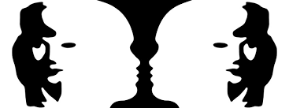

O que é Gestalt?
Gestalt é estudo da percepção humana em relação as formas, a existência de padrões de comportamento visual que o ser humano tem. Esses padrões compõem a base para as Leis da Gestal. Essa ciência defende que, para se compreendermos as partes de uma forma, é necessário antes, entender o todo que o envolve e o compõe. Em outras palavras, poderíamos dizer que o Gestalt, estuda como o nosso cérebro percebe as formas. Poderíamos traduzir Gestalt como “A psicologia das Formas”. Ele entende que nossa percepção das coisas se dá como um todo, de uma forma unificada, e não em pontos isolados.
O processo de interpretação de uma forma está relacionada com forças externas e internas. As forças externas são provenientes da luz do objeto que o objeto reflete para a nossa retina. As forças internas estão relacionadas ao processo fisiológico do nosso cérebro. Dadas a partir da estimulação (forças externas) nosso sistema nervoso tende a organizar e estabelecer as formas de modo coerente e unificados. Essa regulação do cérebro é espontânea. Não podemos controlar. E que o nosso cérebro ao ver alguma forma, ele tenta relacionar a informação com algo que já vimos no passado e que está armazenado na nossa memória.
Então, a teoria Gestalt nos diz que só através da percepção de um todo é que o cérebro consegue interpretar e assimilar uma forma ou um conceito.

Sua importância no Design
No design, a Gestalt nos ajuda a entender como a informação será passada através das formas que criamos. Ela auxilia as pessoas a entenderem e assimilarem as informações que nós passamos pelas imagens. Estudando Gestalt podemos perceber o porquê algumas formas agradam mais que as outras, o porquê enxergarmos um objeto de tal maneira, etc. Com isso podemos usar as leis da Gestalt a nosso favor e de maneira mais consciente para melhorar os nossos projetos e manipulá-las para alcançar nossos objetos de comunicação. Vários artistas e designers utilizam ilusões óticas em seus trabalhos. E muitas vezes aplicamos as leis da Gestalt em nossos trabalhos sem notar. Porque como já disse “são leis reguladoras do nosso sistema nervoso”, por isso usamos várias vezes intuitivamente essas regras em nosso dia a dia, em nossos projetos, ou quando analisamos algum projeto e o achamos coerente, funcional, inovador, ou não. Antes de partir para as leis do Gestalt, vamos entender o básico sobre o que é uma forma e como ela é entendida dentro do estudo da Gestalt.